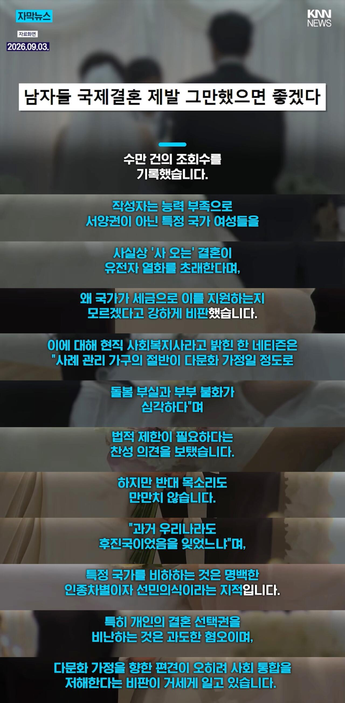

남자 비하 국가 비하 인종 비하를 한 큐에 ㄷㄷ

남자 비하 국가 비하 인종 비하를 한 큐에 ㄷㄷ
꼬우면 연애하고 결혼하면 되지 않음?
3. 남녀 부담 비율 및 금액
• 부담 비율: 전체적인 부담 비율은 신랑 약 62%, 신부 약 38% 수준입니다.
• 소요 금액(추정): 남성은 약 1억 8,300만~2억 1,200만 원, 여성은 약 1억 800만~1억 3,900만 원으로 주거비 비중에 따라 차이가 납니다. 최근에는 전통적 방식에서 벗어나 50:50으로 반반 분담하는 추세도 증가하고 있습니다
어! 나도 왜 국가세금으로 너네 지원하는지 모르겠던데 군대나 가라
한국은 매매혼 아니냐 ㅋㅋㅋ
매매혼 아님 경매혼임 ㅋㅋㅋ
맨날 제시요 이지랄하거든 ㅋㅋㅋ
100년 전 독일에 있었으면 제일 먼저 뮌헨 폭동에 가담할 인간이 싸지를 법한 소리군
시골 다문화가정 아이들에 대한 교육지원이 필요하긴 하겠다
근데 국결하는 남자들이 점점 젊어지고 있으면 조금씩 달라질 수도 있을 듯
히틀러인가
??? 여기 사흘 전에 베트남 배그 어쩌고 하면서 열등 저능 원숭이 어쩌고 저쩌고 하던 개드립아니었냐
걔들 교육을 받긴 했는지 의심된다는 얘기는 본 거 같은데, 유전자가 어쩌구 하는 얘기도 있었음?
없었을리가ㅋㅋ
건수잡고 신나서 욕하다가 선넘는 인종차별하는 애들 수두룩했는데
넌 개드립유저들이 칼라로 연결됐다고 보니?
ㄹㅇ ㅋㅋ
베트남때 분위기랑 지금이랑 생각하면 내로남불 ㅈ됨
유전자 문제는 순혈이 더 위험하잖아
'유전자 열화' 저 글 쓴애부터 이미 유전자 열화된거 같은데
언젠가 부터 저런 말 쓰는 사람들 볼 때 마다 중국이나 일본 지령 받고 한국 사회 분열시킬 틈에 쐐기 박는 사람들로 보임
페미는 사람이 아님 사람으로 의태한 무언가임
걍 어그로끄는거임 현실에서는 아무도관심안주니까 인터넷에서저러는거
뭔 순혈주의 ㅇㅈㄹ 바고 있내
저런겈 짱들이 혐오 조작하는거 같어
원래 멀리 있는 여자랑 결혼해야 더 건강한 아이가 태어남 ㅎ
정보) 개드립 신고사유에는 인종차별이 있다.
국제결혼만큼 인구증가하기 좋은 정챋이있나.. 오히려 시군이아니라 나라차원에서 해야된다봄
미국 호주에서하는 시민권 걸고하는 군입대 정책도 추진 햇으면함
그런 나라들은 이미 이슬람쪽이나 인도인 중국인 이민자들에게 잠식당해버림.
근데 솔직히 동남아혼혈 아이들 불쌍하긴해
아 우생학 신봉자셔
뭐 다양한 의견있을수있는데, 동남아인하고 국제결혼할거면 혼혈인 애들이 학창시절에 겪을 고통을 좀 생각하고 했으면 좋겠다
학창시절은 말그대로 무법지대야 어른들처럼 상식이 통하지않는 공간이지
뭐 학창시절 무사히 잘 넘기는 혼혈인들도 있을테지만, 내가 봤을때 동남아혼혈인 70%는 학창시절 고통을 겪을거같아 애가 무슨죄냐...
나라에서도 다문화를 장려하는 이유가, 사회구조에서 밑바닥 깔아줄 애들을 양산해주길 바라는거야
현재 국내에 불법체류자들이 하는 일들을 다문화 2세들이 해주길 바라는거지 그래야 사회가 돌아가니까
서양인이나, 중국인, 일본인들하고 할거아니면 동남아인하고 국제결혼은 안했으면 좋겠다
도태남들 족같긴함
악화가 양화를 구축하는 느낌
투명하다 투명해 ㅋㅋ
지들은 돈줘도 못하는데 남자들은 돈으로라도 결혼한다니까
배아픈 년들 발작하는거 개꿀잼이네ㅋㅋㅋㅋㅋㅋㅋㅋㅋㅋㅋ
더 어린 여자 사와서 한국어 교육만 잘 시키면 해결될 문제네
한국이 아직 미개한게 서양가서 인종차별당하면 ㅈㄹㅈㄹ하고 항의하면서 동남아인들은 대놓고 차별함. 그걸 지적하는 이조차 거의없음 ㅋㅋ
내로남불 오지는중
리얼돌 쓴다고 지랄~ 국제결혼 한다고 지랄~ 뭐 어쩌라는거냐
유전자 열화 ㄷㄷ 뭔 우생학이라도 하나?
유전자 열화ㅋㅋㅋㅋㅋㅋㅋㅋㅋㅋ
당연히 타 국가 사람을 우리나라로 델고 오니까 지원하지 인구수 1명 추가되는데
거기다 한국 내에서 서로 비교하는 문화 때문에 한국 사람끼리 결혼하기 힘드니
비교가 덜한 타 국가랑 인연을 맺으려는건데 그렇게라도 결혼하려는 사람이면 한국 이성이랑 결혼하기 힘든 상태니까 더 그런거고
"이기적인놈, 나라가 망해도 좋다는거냐?"
저런똥을 왜 퍼올림?
그냥 페미하는년이 열등감에 저러는거
정액외국유출 ㅋㅋㅋㅋㅋㅋㅋㅋㅋㅋ
그래 주인님의 나라 일본 or 서양 인종 아닌 이상 국결은 유전자 열화 맞지
다문화 지원하는거 자체가 선민의식임. 우리가 뭐라고 그분들을 감히 지원하냐? 충분히 자립가능하신 분들인데. 국제결혼 찬성에 다문화지원은 끊는게 맞음. 농촌총각 어쩌고 그거도 이미 오래된 문제고 그때 결혼못한 총각들 할배다됨. 국제결혼 다문화 지원에 대해 진지하게 고민해봐야함.
어짜피 한국인도 매매인데
더 싸고 좋은 매물하고 하는게 당연
나도 국제결혼좀 안했으면 좋겠더라. 다 그냥 게으르고 한탕 해먹을려는 사람들 많지 않나? 그들이 한국발전에 얼마나 기여를 할까? 민족성이 그렇게 희석될 것 같은 느낌
민족성 ㅇㅈㄹㅋㅋㅋ 그렇게 따지면 칭기스칸한테 개따먹히고 우리도 사실상 몽골리안임
이게 기사로 낼 정도냐?ㅋㅋㅋㅋㅋ
한 반세기 전 기준으로 말 바꾸면
어디 근본도 없는 족보 사다 이름만 올린 천 것이 남에 집에 들어와서 열등한 유전자를 남기려고 기어 들어와 새끼를 까느뇨 이건가
근데 그 천 것에서 태어난게 너 자너...